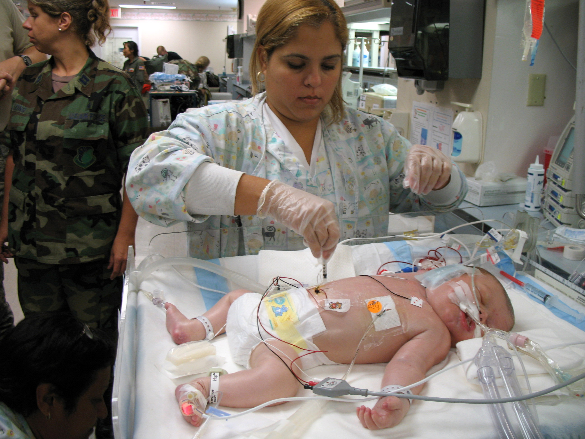

Pediatrics
Neonatal Sepsis: Early Onset vs Late Onset, Pathophysiology, Diagnosis and Treatment
Source presentation · 6 min read
Edits save on this browser. Download a copy for your records.
Neonatal Sepsis


Definition
- Neonatal sepsis is infection involving blood stream with some type of pathogen in newborn infant less than 4 weeks of age.
- Neonatal sepsis is a serious illness and it may lead to multi organ failure and death
- Neonatal sepsis is classified into
- Early onset sepsis (EOS): up to 72 hours after birth
- Late onset sepsis (LOS): 72 hours to 28 days
Causes
- EOS is caused by transmission of microorganisms from female genitourinary tract to the neonate, this could be:
- Either an ascending infection (microorganisms ascend through the birth tract to the uterus and to amniotic fluid and then to baby)
- Or neonate could get infected during delivery as they pass through the colonized birth tract
- EOS is typically caused by group B streptococci, E. coli, coagulase negative staphylococci, H. influenza, Klebsiella, salmonella and listeria
- LOS is caused by transmission of microorganisms from surrounding environment after delivery, e.g. contact with healthcare workers and caregivers, equipment used early in life like needles, bag masks …
- LOS could be a manifestation of an infection transmitted from the mother (vertical transmission)
- LOS is caused by many microorganisms, most commonly by coagulase negative staph (accounts for 50% of LOS cases), could be also caused by bacteria like (H. influenza, S. Pneumonia and Meningococcus) and viruses like (HSV, CMV, enteroviruses)
Pathophysiology
- Infants have immature immune system, they have slow inflammatory response, reduced complement activation pathways and show deficit in phagocytic migration to sites of infection, their white blood cells are less effective
- Preterm infants also have immature immune system but not just that, they also have deficiency in the amount of immunoglobulins transferred from mother compared to mature infants, this make immature infants at higher risk for sepsis
- After pathogens infect the blood stream, they might travel to the CNS where they lead to meningitis and encephalitis
- 5% of neonatal sepsis cases are associated with meningitis
Risk factors for sepsis
- Related to the neonate
- Preterm infant: weak immune system, immature epithelial barrier, increase need for vascular access => preterm infants are six times more susceptible to sepsis more than term infants
- Low birth weight
- Poor feeding
- Poor cord care
- Related to the mother
- Maternal chorioamnionitis or GBS colonized birth tract
- Maternal PPROM
- Foul smelling liquor
- Maternal fever
- Difficult and prolonged labor
EOS signs and symptoms
- Initially non specific symptoms
- Infant with EOS present in the first 3 days of life with grunting, poor feeding and pallor
- Then infant develops lethargy, hypothermia, cyanosis and neutropenia
- Respiratory failure, hypotension and meningitis are common in EOS
- Infant with EOS may also develop DIC, acute tubular necrosis and peripheral gangrene as a complications
- Initially it is difficult to differentiate sepsis from RDS because both present with grunting and no lethargy in septic infant initially (a lot of similarities with RDS) => all grunting infants should receive empirical antibiotics until blood cultures arrive
LOS signs and symptoms
- Infant with LOS is healthy after birth but then they would comeback after in the period 3- 28 days after birth with non specific symptoms
- Then they would develop lethargy and poor feeding
- Infants also develop hypotonia, fever, bulging fontanelles and seizures
- There is also conjugated hyperbilirubinemia
- Meningitis occur in 75% of cases
- Other complications include osteomyelitis (occur if the cause was group B strep or staph aureus), arthritis (occur if the pathogen was gonococci, staph aureus, candida, many other gram negative bacteria)
- When examining LOS infants, focus on examination of bones looking for pseudo paralysis (limitation of movement) of a certain limb
Diagnosis
- Septic infants are asymptomatic initially, that is why labs are important for diagnosis
- In neonate with risk factors, blood cultures should be drawn
- If blood cultures are positive then CSF analysis is indicated looking for meningitis
- CBC, CRP for excluding sepsis
- Neutropenia (absolute neutrophils < 1750/ml) is more specific than neutrophilia for sepsis in CBC
- Chest x ray to look for pneumonia
- If pneumonia is confirmed, ABG is important to monitor for hypoxemia and metabolic acidosis
- Blood pressure and urine output, peripheral pulses and skin color should be monitored to look for septic shock
- If septic shock occurs then treatment with fluids and vasopressors
Treatment
- Empirical antibiotic therapy should be started if sepsis is suspected (don’t wait for blood cultures to arrive, but at the same time don’t start unless blood cultures are withdrawn)
- Typical empirical antibiotic regimens for EOS include IV ampicillin + aminoglycoside (e.g. gentamicin) for 2 weeks, this regimen covers most bacteria in EOS esp. GBS, E.coli and Listeria, alternative option would be ampicillin + cefotaxime
- For LOS, vancomycin + aminoglycoside should be enough to cover for coagulase negative staphylococci, staph aureus and pseudomonas
- If meningitis is expected in EOS or LOS, then most of the previously mentioned antibiotics have poor penetration to CNS, that is why adding a third gen cephalosporin to the regimen is important (e.g. cefotaxime) and treatment period should be extended to 3 weeks
- Avoid ceftriaxone because it lead to hyperbilirubinemia and cause calcium deposition
- If CSF cultures are negative after a while then you can stop the antibiotic treatment at 2 weeks
- Oral feeding should be withheld, nasogastric tube inserted to relieve distension and aspirate stomach contents
- Maintenance fluid therapy and electrolytes replacements are important, parenteral nutrition maybe administered
- Assisted ventilation and cardiovascular support maybe needed for the infant to survive
- If peripheral pulses are weak and capillary refill time is prolonged (normal less than 3 seconds), skin color is pale and urine output is poor then give NS or RL 10 ml/kg over 10 minutes (bolus dose) and repeat 2 times over 45 minutes if needed
- If those parameters still poor then dobutamine or dopamine is needed to maintain perfusion
- Intratracheal surfactant maybe beneficial for the respiratory distress
- If the mother birth tract is colonized with group B strep then empirical penicillin prophylaxis is beneficial, also penicillin prophylaxis is beneficial if the mother has other risk factors (fever, preterm labor, previous infant with EOS and chorioamnionitis)
Continue learning
Practice the topics covered in this lecture.